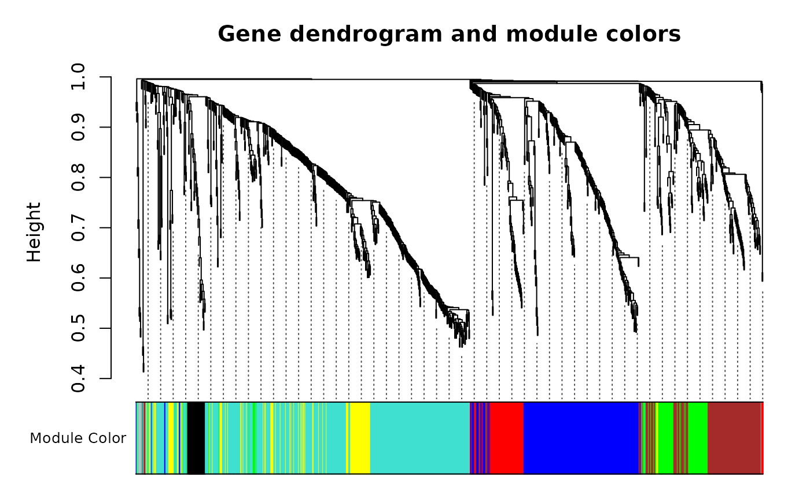
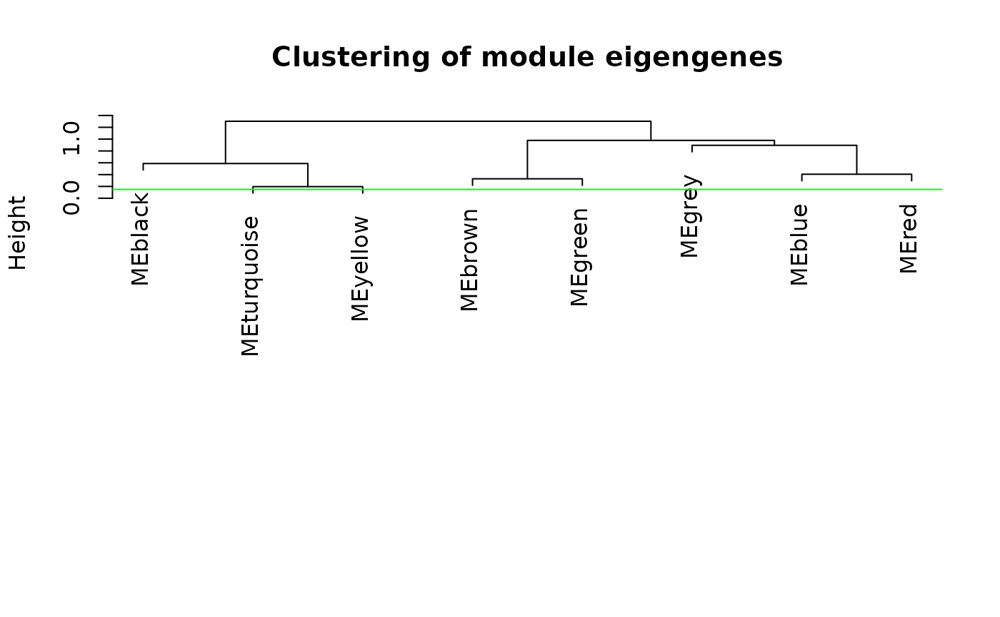

# This is quick to run
METAB_WGCNA <- run_WGCNA(object = METAB_EXP,
power = 12,
module_prefix = "M")
#> ..connectivity..
#> ..matrix multiplication (system BLAS)..
#> ..normalization..
#> ..done.
#> ..done.
#> mergeCloseModules: Merging modules whose distance is less than 0.15
#> Calculating new MEs...
#> multiSetMEs: Calculating module MEs.
#> Working on set 1 ...
#> moduleEigengenes: Calculating 8 module eigengenes in given set.
#> ..principal component calculation for module red failed with the following error:
#> Error in impute.knn(datModule, k = min(10, nrow(datModule) - 1)) :
#> a column has more than 80 % missing values!
#> ..hub genes will be used instead of principal components.
table(METAB_WGCNA$modules$moduleID)
#>
#> M0 M1 M2 M3 M4 M5 M6 M7
#> 6 415 221 137 99 86 69 30
# M0 M1 M2 M3 M4 M5 M6 M7
# 6 415 221 137 99 86 69 30
# Proportion of missing values?
prop.table(table(is.na(exprs(PROT_EXP)))) # ~5.7% of values are missing
# Convert filtered counts to normalized log2 counts-per-million reads
dge <- DGEList(counts = exprs(TRNSCRPT_EXP),
samples = pData(TRNSCRPT_EXP),
group = TRNSCRPT_EXP$exp_group)
dge <- calcNormFactors(dge, method = "TMM")
exprs(TRNSCRPT_EXP) <- cpm(dge, log = TRUE)
## NOT RUN WHEN BUILDING VIGNETTE (too slow: ~1 hr)
TRNSCRPT_WGCNA <- run_WGCNA(object = TRNSCRPT_EXP,
power = 25, # use power = 20:30 to see plots
module_prefix = "T")
table(TRNSCRPT_WGCNA$modules$moduleID)
# T0 T1 T2 T3 T4 T5 T6 T7 T8 T9 T10 T11 T12 T13 T14
# 2587 4683 3251 2134 1517 541 448 325 226 210 186 114 98 51 33
# Save
usethis::use_data(METAB_WGCNA, internal = FALSE, overwrite = TRUE,
version = 3, compress = "bzip2")
usethis::use_data(PROT_WGCNA, internal = FALSE, overwrite = TRUE,
version = 3, compress = "bzip2")
usethis::use_data(TRNSCRPT_WGCNA, internal = FALSE, overwrite = TRUE,
version = 3, compress = "bzip2")
sessionInfo()
#> R version 4.4.0 (2024-04-24)
#> Platform: x86_64-pc-linux-gnu
#> Running under: Ubuntu 22.04.4 LTS
#>
#> Matrix products: default
#> BLAS: /usr/lib/x86_64-linux-gnu/openblas-pthread/libblas.so.3
#> LAPACK: /usr/lib/x86_64-linux-gnu/openblas-pthread/libopenblasp-r0.3.20.so; LAPACK version 3.10.0
#>
#> locale:
#> [1] LC_CTYPE=C.UTF-8 LC_NUMERIC=C LC_TIME=C.UTF-8
#> [4] LC_COLLATE=C.UTF-8 LC_MONETARY=C.UTF-8 LC_MESSAGES=C.UTF-8
#> [7] LC_PAPER=C.UTF-8 LC_NAME=C LC_ADDRESS=C
#> [10] LC_TELEPHONE=C LC_MEASUREMENT=C.UTF-8 LC_IDENTIFICATION=C
#>
#> time zone: UTC
#> tzcode source: system (glibc)
#>
#> attached base packages:
#> [1] stats graphics grDevices utils datasets methods base
#>
#> other attached packages:
#> [1] edgeR_4.2.0 limma_3.60.0
#> [3] MotrpacRatTraining6moWAT_1.0.1 Biobase_2.64.0
#> [5] BiocGenerics_0.50.0 MotrpacRatTraining6moWATData_2.0.0
#>
#> loaded via a namespace (and not attached):
#> [1] RColorBrewer_1.1-3 rstudioapi_0.16.0 jsonlite_1.8.8
#> [4] shape_1.4.6.1 magrittr_2.0.3 ggbeeswarm_0.7.2
#> [7] rmarkdown_2.26 GlobalOptions_0.1.2 fs_1.6.4
#> [10] zlibbioc_1.50.0 ragg_1.3.0 vctrs_0.6.5
#> [13] memoise_2.0.1 base64enc_0.1-3 rstatix_0.7.2
#> [16] htmltools_0.5.8.1 dynamicTreeCut_1.63-1 curl_5.2.1
#> [19] broom_1.0.5 Formula_1.2-5 sass_0.4.9
#> [22] bslib_0.7.0 htmlwidgets_1.6.4 desc_1.4.3
#> [25] impute_1.78.0 cachem_1.0.8 lifecycle_1.0.4
#> [28] iterators_1.0.14 pkgconfig_2.0.3 Matrix_1.7-0
#> [31] R6_2.5.1 fastmap_1.1.1 GenomeInfoDbData_1.2.12
#> [34] clue_0.3-65 digest_0.6.35 colorspace_2.1-0
#> [37] patchwork_1.2.0 AnnotationDbi_1.65.2 S4Vectors_0.42.0
#> [40] textshaping_0.3.7 Hmisc_5.1-2 RSQLite_2.3.6
#> [43] ggpubr_0.6.0 filelock_1.0.3 latex2exp_0.9.6
#> [46] fansi_1.0.6 httr_1.4.7 abind_1.4-5
#> [49] compiler_4.4.0 bit64_4.0.5 doParallel_1.0.17
#> [52] htmlTable_2.4.2 backports_1.4.1 BiocParallel_1.38.0
#> [55] carData_3.0-5 DBI_1.2.2 highr_0.10
#> [58] ggsignif_0.6.4 rjson_0.2.21 tools_4.4.0
#> [61] vipor_0.4.7 foreign_0.8-86 beeswarm_0.4.0
#> [64] msigdbr_7.5.1 nnet_7.3-19 glue_1.7.0
#> [67] grid_4.4.0 checkmate_2.3.1 cluster_2.1.6
#> [70] fgsea_1.30.0 generics_0.1.3 gtable_0.3.5
#> [73] preprocessCore_1.66.0 tidyr_1.3.1 data.table_1.15.4
#> [76] WGCNA_1.72-5 car_3.1-2 utf8_1.2.4
#> [79] XVector_0.44.0 foreach_1.5.2 pillar_1.9.0
#> [82] stringr_1.5.1 babelgene_22.9 circlize_0.4.16
#> [85] splines_4.4.0 dplyr_1.1.4 BiocFileCache_2.12.0
#> [88] lattice_0.22-6 survival_3.5-8 bit_4.0.5
#> [91] tidyselect_1.2.1 GO.db_3.19.1 ComplexHeatmap_2.20.0
#> [94] locfit_1.5-9.9 Biostrings_2.72.0 knitr_1.46
#> [97] gridExtra_2.3 IRanges_2.38.0 stats4_4.4.0
#> [100] xfun_0.43 statmod_1.5.0 matrixStats_1.3.0
#> [103] stringi_1.8.3 UCSC.utils_1.0.0 yaml_2.3.8
#> [106] evaluate_0.23 codetools_0.2-20 tibble_3.2.1
#> [109] cli_3.6.2 ontologyIndex_2.12 rpart_4.1.23
#> [112] systemfonts_1.0.6 munsell_0.5.1 jquerylib_0.1.4
#> [115] Rcpp_1.0.12 GenomeInfoDb_1.40.0 dbplyr_2.5.0
#> [118] png_0.1-8 fastcluster_1.2.6 parallel_4.4.0
#> [121] pkgdown_2.0.9 ggplot2_3.5.1 blob_1.2.4
#> [124] scales_1.3.0 purrr_1.0.2 crayon_1.5.2
#> [127] GetoptLong_1.0.5 rlang_1.1.3 cowplot_1.1.3
#> [130] fastmatch_1.1-4 KEGGREST_1.44.0